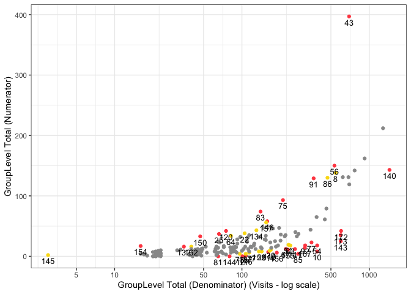

This is a {simaerep} extension for the {gsm} package.
The package provides:
gsm-style functions as detailed here:
-
Input_CumCount()patient-level cumulative count from source data -
Analyze_Simaerep()will executesimaerep -
Flag_Simaerep()alias ofgsm.core::Flag
required module configuration files:
inst/workflow/1_mappingsinst/workflow/2_metricsinst/workflow/3_reportinginst/workflow/2_modules
customized Rmd report template
inst/report/Report_KRI.Rmd
KRI:
- AE Over/Under- Reporting Probability
- SAE Over/Under- Reporting Probability
- PD Over/Under- Reporting Probability
- Important PD Over/Under- Reporting Probability
- AE-Zscore
- AE Over/Under- Reporting Probability with Multiplicity Correction
- Subject Study Treatment Discontinuation Zscore
- Subject Study Treatment Discontinuation AE Over/Under- Reporting Probability
Why use {simaerep}?
{simaerep} uses a metric ratio to detect over/under-reporting of subject-related clinical events such as AEs. It accounts for sites having different denominator counts similarly to z-scores derived from normal approximations in funnel plots which is the {gsm} standard. On top of that {simaerep} considers changing event (numerator) probabilities over time. This advantage is particularly important when monitoring ongoing studies and sites start enrolling patients at different times. Typically event rates are higher at the beginning of a study and decrease over time. {simaerep} can detect this pattern and adjust for it and we avoid comparing sites with a few patients that are all in follow-up to sites with many patients that at the beginning of their treatment cycle. In a simulation experiment we could show that {simaerep} outperforms z-scores when event rates are not constant over-time but comparable when event rates are constant over time see documentation. This example report plots {simaerep} results onto the the familiar {gsm} scatter plots next to their z-score counter parts. We can appreciate the similarity of the results the most noticeable difference is {simaerep} assigning greater scores to allegedly under-reporting sites. As the normal approximation produces negative lower boundaries for lower denominator counts that are set to zero, high z-scores associated with high probabilities are unobtainable in these regions. The calibrated outlier probabilities obtained from z-scores are not symmetric, a site with a z-score of 2 does not have the same outlier probability as a site with a z-score of -2. {simaerep} is non-parametric and provides realistic probabilities for all ranges of denominator counts for upper and lower outliers.
Resources:
- simaerep statistical performance
- Bootstrap Simulation for Outlier Detection in Operational Site Metrics Using Patient Reassignment PHUSE Paper, PHUSE Presentation
- An Open-Source R Package for Detection of Adverse Events Under-Reporting in Clinical Trials: Implementation and Validation by the IMPALA (Inter coMPany quALity Analytics) Consortium
Installation
You can install the development version of gsm.simaerep from GitHub with:
# install.packages("remotes")
remotes::install_github("Gilead-BioStats/clindata")
remotes::install_github("Gilead-BioStats/gsm.core@dev")
remotes::install_github("Gilead-BioStats/gsm.mapping@v1.0.0")
remotes::install_github("Gilead-BioStats/gsm.kri@dev")
remotes::install_github("Gilead-BioStats/gsm.reporting@v1.0.0")
remotes::install_github("IMPALA-Consortium/gsm.simaerep")Documentation
For a more detailed description see the gsm.simaerep Cookbook
Example
library(gsm.simaerep)
library(gsm.kri)
dfInput <- Input_CumCount(
dfSubjects = clindata::rawplus_dm,
dfNumerator = clindata::rawplus_ae,
dfDenominator = clindata::rawplus_visdt %>% dplyr::mutate(visit_dt = lubridate::ymd(visit_dt)),
strSubjectCol = "subjid",
strGroupCol = "siteid",
strGroupLevel = "Site",
strNumeratorDateCol = "aest_dt",
strDenominatorDateCol = "visit_dt"
)
dfAnalyzed <- Analyze_Simaerep(dfInput)
dfFlagged <- Flag_Simaerep(dfAnalyzed, vThreshold = c(-0.99, -0.95, 0.95, 0.99))
#> ℹ Sorted dfFlagged using custom Flag order: 2.Sorted dfFlagged using custom Flag order: -2.Sorted dfFlagged using custom Flag order: 1.Sorted dfFlagged using custom Flag order: -1.Sorted dfFlagged using custom Flag order: 0.
gsm.kri::Visualize_Scatter(
dfFlagged,
dfBounds = NULL,
strGroupLabel = "GroupLevel",
strUnit = "Visits"
)
Quality Control
Since {gsm} is designed for use in a GCP framework, we have conducted extensive quality control as part of our development process. In particular, we do the following during early development:
- Unit Tests - Unit tests are written for all core functions, 100% coverage required.
- Workflow Tests - Additional unit tests confirm that core workflows behave as expected.
- Function Documentation - Detailed documentation for each exported function with examples is maintained with Roxygen.
- Package Checks - Standard package checks are run using GitHub Actions and must be passing before PRs are merged.
- Continuous Integration - Continuous integration is provided via GitHub Actions.
- Code Formatting - Code is formatted with {styler} before each release.
- Contributor Guidelines - Detailed contributor guidelines including step-by-step processes for code development and releases are provided as a vignette.
- Code Demonstration - Cookbook Vignette provides demos and explanations for code usage.
Parking
As development progresses, we will also conduct the following quality control steps:
- Qualification Workflow - All assessments have been Qualified as described in the Qualification Workflow Vignette. A Qualification Report Vignette is generated and attached to each release.
- Code Review - Code review is conducted using GitHub Pull Requests (PRs), and a log of all PRs is included in the Qualification Report Vignette.
- Data Specifications - Machine-readable data specifications are maintained for all KRIs. Specifications are automatically added to relevant function documentation.
- Regression Testing - Extensive QC and testing is done before each release.